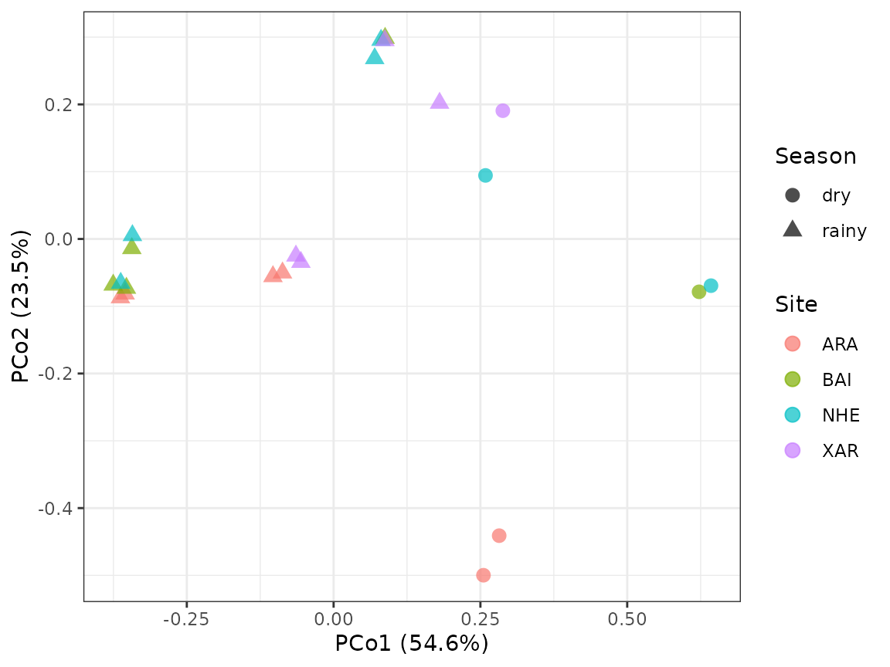
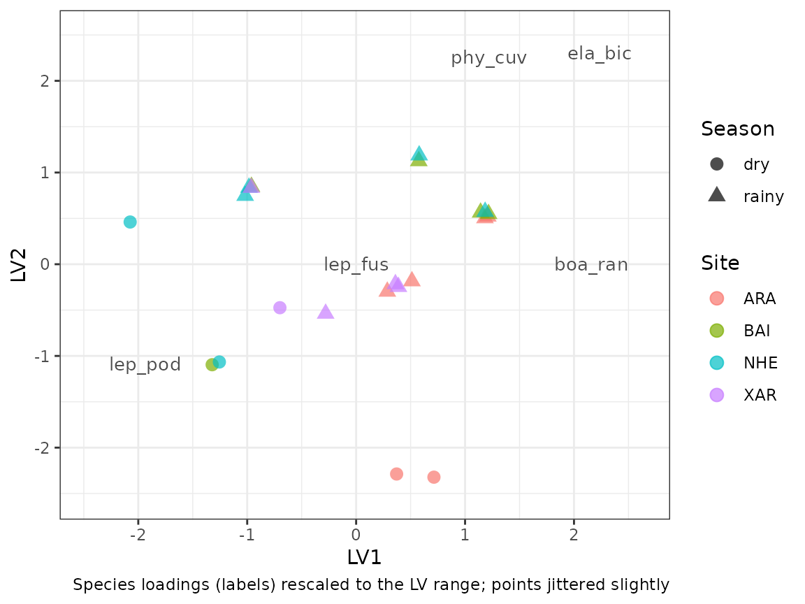

From detections to community analyses
Source:vignettes/community-matrices.Rmd
community-matrices.RmdStage 3 of sheepdog turns the calibrated nightly detection history into site x month community matrices for multivariate analyses. This vignette runs that stage on the example data shipped with the package, and then uses the matrices in a distance-based ordination (PCoA) and in a model-based ordination and test with generalised linear latent variable models (GLLVM).
The calibrated detection history
The example history is the output of calibrate() on
simulated BirdNET predictions for four sites and six months (October
2021 to March 2022), with five recorded nights per site x month, except
for one recorder failure. In the simulation, occupancy depends on
species-specific seasonality (most species prefer the rainy months,
November to February; one prefers the dry months) and on species x site
preferences; the false-positive scores overlap those of true detections,
at rates that vary among species and sites
(data-raw/make_example_data.R).
ex <- system.file("extdata", "example", package = "sheepdog")
history_file <- file.path(ex, "nightly_detection_history.csv")
history <- readr::read_csv(history_file, show_col_types = FALSE,
col_types = readr::cols(night = "c"))
history
#> # A tibble: 872 × 10
#> site species night n_detections n_reliable p_tp_max detection_k1
#> <chr> <chr> <chr> <dbl> <dbl> <dbl> <dbl>
#> 1 ARA boa_ran 20211001 10 4 0.999 1
#> 2 ARA boa_ran 20211006 13 10 1.000 1
#> 3 ARA boa_ran 20211011 16 12 1.000 1
#> 4 ARA boa_ran 20211016 11 5 1.000 1
#> 5 ARA boa_ran 20211021 8 3 1.000 1
#> 6 ARA boa_ran 20211101 13 9 1.000 1
#> 7 ARA boa_ran 20211106 9 7 1.000 1
#> 8 ARA boa_ran 20211111 11 5 0.997 1
#> 9 ARA boa_ran 20211116 12 8 1.000 1
#> 10 ARA boa_ran 20211121 7 3 0.999 1
#> # ℹ 862 more rows
#> # ℹ 3 more variables: detection_k2 <dbl>, detection_k3 <dbl>, detection <dbl>The history covers 4 sites (ARA, BAI, NHE, XAR) and 8 species
(boa_ran, den_nan, ela_bic, lep_fus, lep_pod, phy_cuv, pse_pla,
sci_nas). Each row is a site x species x night. n_reliable
counts the detections whose calibrated probability of being a true
positive reached p_min in calibrate();
detection_k1 to detection_k3 flag nights with
at least one, two or three such detections.
Why the entry rule must be strict
Occupancy models with false positives include an observation layer
that absorbs misidentifications, provided that part of the detections
are confirmed (see vignette("crywolf-integration")).
Dissimilarity indices and ordinations have no such layer: a single false
positive becomes a species “present” in a sample and contributes
directly to beta diversity. community_matrices() therefore
applies three filters.
-
Repetition rule (
k_min). A species counts as detected on a night only when it had at leastk_minreliable detections that night (columndetection_k<k_min>). An isolated high-probability detection is more likely to be an error than repeated ones. - Core species. Only species whose calibration is reliable at every site enter the matrix. If the classifier has lower recall, or a poorer calibration, at some sites, the resulting differences in detection would appear as artefactual turnover among sites.
-
Minimum effort (
min_nights_month). Each cell is the frequency of nights with detection, standardised by effort (nights with detection / nights recorded at that site x month). Cells with fewer recorded nights thanmin_nights_monthgive unstable frequencies and are dropped.
Choosing the core species
A species with no reliable detection at a site may be absent there,
or the calibration may fail there: the classifier may detect it, but
never with a calibrated probability that reaches p_min.
Only the first case allows a zero in the matrix.
cell_status() separates the two from the calibration model
and the reviewed clips. Each site × species cell is
-
"reliable": the calibrated curve reachesp_minwithin the reviewed scores, with at leastmin_nreviewed clips; -
"probably_absent": clips were reviewed, but none was a true positive; -
"unreliable": true positives were reviewed, but the curve never reachesp_min(or too few clips were reviewed).
Here the calibration model is refitted to the reviewed clips shipped
with the example (the model calibrate() refits; see
vignette("calibration")):
val_files <- list.files(file.path(ex, "validation"), full.names = TRUE)
val <- suppressMessages(read_validations(val_files))
# m4 is singular on these data; the warning is discussed in the calibration
# article
fit <- suppressWarnings(fit_calibration(val,
calibration_models()$m4_species_x_site))
status <- cell_status(fit, val, p_min = 0.95, min_n = 15)
status |>
dplyr::select(species, site, status) |>
tidyr::pivot_wider(names_from = site, values_from = status)
#> # A tibble: 8 × 5
#> species ARA BAI NHE XAR
#> <chr> <chr> <chr> <chr> <chr>
#> 1 boa_ran reliable reliable reliable reliable
#> 2 den_nan reliable reliable reliable unreliable
#> 3 ela_bic reliable reliable reliable reliable
#> 4 lep_fus probably_absent probably_absent reliable reliable
#> 5 lep_pod reliable reliable reliable reliable
#> 6 phy_cuv reliable reliable reliable reliable
#> 7 pse_pla unreliable unreliable unreliable unreliable
#> 8 sci_nas reliable unreliable unreliable reliablesuggest_core_species() keeps the species with no
unreliable cell:
core <- suggest_core_species(status)
core
#> [1] "boa_ran" "ela_bic" "lep_fus" "lep_pod" "phy_cuv"Species with at least one unreliable cell (den_nan, pse_pla, sci_nas) stay out. Cells classified as probably absent (lep_fus ARA, lep_fus BAI) do not exclude a species: a zero there is a plausible absence, not a failure of the classifier. The choice remains the analyst’s; the table is the evidence for it.
summarise_history() gives a complementary view: the
number of nights with a reliable detection per site and species (shown
here for k_min = 1):
summarise_history(history) |>
dplyr::select(site, species, nights_k1) |>
tidyr::pivot_wider(names_from = site, values_from = nights_k1)
#> # A tibble: 8 × 5
#> species ARA BAI NHE XAR
#> <chr> <dbl> <dbl> <dbl> <dbl>
#> 1 boa_ran 30 15 10 13
#> 2 den_nan 22 3 5 0
#> 3 ela_bic 20 20 20 25
#> 4 lep_fus 0 0 2 1
#> 5 lep_pod 20 10 20 28
#> 6 phy_cuv 21 20 25 15
#> 7 pse_pla 0 0 0 0
#> 8 sci_nas 11 0 0 2Building the matrices
mats <- community_matrices(history, core_species = core, k_min = 2,
min_nights_month = 5)
names(mats)
#> [1] "frequency" "counts" "effort" "trials"The effort table lists the recorded nights per site x month and whether the cell entered the matrices.
mats$effort
#> # A tibble: 24 × 4
#> site month n_nights_recorded included
#> <chr> <chr> <int> <lgl>
#> 1 ARA 2021-10 5 TRUE
#> 2 ARA 2021-11 5 TRUE
#> 3 ARA 2021-12 5 TRUE
#> 4 ARA 2022-01 5 TRUE
#> 5 ARA 2022-02 5 TRUE
#> 6 ARA 2022-03 5 TRUE
#> 7 BAI 2021-10 5 TRUE
#> 8 BAI 2021-11 5 TRUE
#> 9 BAI 2021-12 5 TRUE
#> 10 BAI 2022-01 5 TRUE
#> # ℹ 14 more rows
mats$effort |> dplyr::filter(!included)
#> # A tibble: 1 × 4
#> site month n_nights_recorded included
#> <chr> <chr> <int> <lgl>
#> 1 XAR 2021-10 3 FALSEOf the 24 site x month cells, 23 entered the matrices. The cell
dropped by min_nights_month = 5 is XAR in 2021-10 (3
nights), the month of the simulated recorder failure; it remains listed
in the effort table with included = FALSE. Effort is
approximated by the number of distinct nights that appear in the history
of the site for any species, which is adequate when detections are
dense, as here.
The count matrix holds the number of nights with detection, and the frequency matrix divides it by the recorded nights:
mats$counts
#> # A tibble: 23 × 8
#> site month n_nights_recorded boa_ran ela_bic lep_fus lep_pod phy_cuv
#> <chr> <chr> <int> <int> <int> <int> <int> <int>
#> 1 ARA 2021-10 5 5 0 0 5 0
#> 2 ARA 2021-11 5 5 5 0 0 5
#> 3 ARA 2021-12 5 5 5 0 0 5
#> 4 ARA 2022-01 5 5 5 0 4 5
#> 5 ARA 2022-02 5 5 5 0 5 5
#> 6 ARA 2022-03 5 5 0 0 4 0
#> 7 BAI 2021-10 5 0 0 0 0 0
#> 8 BAI 2021-11 5 0 5 0 5 5
#> 9 BAI 2021-12 5 4 5 0 0 5
#> 10 BAI 2022-01 5 5 5 0 0 5
#> # ℹ 13 more rows
mats$frequency
#> # A tibble: 23 × 8
#> site month n_nights_recorded boa_ran ela_bic lep_fus lep_pod phy_cuv
#> <chr> <chr> <int> <dbl> <dbl> <dbl> <dbl> <dbl>
#> 1 ARA 2021-10 5 1 0 0 1 0
#> 2 ARA 2021-11 5 1 1 0 0 1
#> 3 ARA 2021-12 5 1 1 0 0 1
#> 4 ARA 2022-01 5 1 1 0 0.8 1
#> 5 ARA 2022-02 5 1 1 0 1 1
#> 6 ARA 2022-03 5 1 0 0 0.8 0
#> 7 BAI 2021-10 5 0 0 0 0 0
#> 8 BAI 2021-11 5 0 1 0 1 1
#> 9 BAI 2021-12 5 0.8 1 0 0 1
#> 10 BAI 2022-01 5 1 1 0 0 1
#> # ℹ 13 more rowsSensitivity to the repetition rule
The repetition rule trades false positives against missed detections.
The mean frequency of each core species across cells shows how the
matrix changes with k_min:
sens <- lapply(1:3, function(k) {
community_matrices(history, core, k_min = k)$frequency |>
dplyr::summarise(dplyr::across(dplyr::all_of(core), mean)) |>
dplyr::mutate(k_min = k, .before = 1)
}) |>
dplyr::bind_rows()
sens
#> # A tibble: 3 × 6
#> k_min boa_ran ela_bic lep_fus lep_pod phy_cuv
#> <int> <dbl> <dbl> <dbl> <dbl> <dbl>
#> 1 1 0.565 0.739 0.0261 0.652 0.704
#> 2 2 0.548 0.739 0 0.617 0.696
#> 3 3 0.478 0.713 0 0.591 0.670From k_min = 1 to 3, the mean frequency of
ela_bic falls by 4%, whereas that of lep_fus falls by 100%. The rule
therefore acts unevenly among species, and its effect on later analyses
should be reported. k_min = 2 is the default.
Writing the matrices to disk
build_community_matrices() is the wrapper that reads
nightly_detection_history.csv, calls
community_matrices() and writes the frequency and count
matrices and the effort table as CSV files:
out <- file.path(tempdir(), "community_matrices")
mats <- build_community_matrices(history_file, out, core_species = core,
k_min = 2, min_nights_month = 5)
#> Matrix: 23 rows (site x month) x 5 species | rule k >= 2
#> Effort: 23 site x month cells included; 1 dropped for having < 5 recorded nights (see effort_site_month.csv)
#> Files in: /tmp/Rtmp00PGvk/community_matrices
list.files(out)
#> [1] "count_matrix_site_month_k2.csv" "effort_site_month.csv"
#> [3] "frequency_matrix_site_month_k2.csv"Preparing the samples
Both analyses below use the same samples. Samples in which no core
species was detected are removed first (drop_empty = TRUE):
their Bray–Curtis dissimilarity is undefined, and they carry no
information on species co-occurrence. Season is coded as rainy (November
to February) or dry.
mats_ord <- community_matrices(history, core_species = core, k_min = 2,
min_nights_month = 5, drop_empty = TRUE)
#> 1 site x month row(s) without any core species dropped: BAI 2021-10
samples <- mats_ord$counts |>
dplyr::mutate(
season = factor(ifelse(substr(month, 6, 7) %in% c("11", "12", "01", "02"),
"rainy", "dry"), levels = c("dry", "rainy")),
site = factor(site)
)
freq <- as.matrix(samples[, core]) / samples$n_nights_recorded
rownames(freq) <- paste(samples$site, samples$month)1 sample(s) removed; 22 samples x 5 species remain. The example has only 4 sites and six months, so the analyses below illustrate the workflow; they do not support general conclusions.
Distance-based ordination: PCoA on Bray–Curtis
The choice of resemblance coefficient determines what an ordination
represents; Legendre & Legendre (2012) review the properties of the
coefficients. Here we use Bray–Curtis on the frequency matrix, which
retains the quantitative information of the frequencies (Jaccard on
incidence would discard it). Bray–Curtis is not Euclidean, so a
principal coordinates analysis (PCoA) of it produces negative
eigenvalues, which have no geometric representation. Its square root is
Euclidean (Legendre & Legendre 2012), and we use it below. The PCoA
is computed with ape::pcoa().
bc <- vegan::vegdist(freq, method = "bray")
pcoa_bc <- ape::pcoa(bc)
pcoa_sq <- ape::pcoa(sqrt(bc))
tol <- 1e-8
c(bray_curtis = sum(pcoa_bc$values$Eigenvalues < -tol),
sqrt_bray_curtis = sum(pcoa_sq$values$Eigenvalues < -tol))
#> bray_curtis sqrt_bray_curtis
#> 6 0Untransformed Bray–Curtis yields 6 negative eigenvalues; its square
root yields none. An alternative is to keep the untransformed
coefficient and correct the negative eigenvalues, with the Lingoes or
Cailliez corrections offered by ape::pcoa()
(correction = "lingoes" or
correction = "cailliez"); both are described by Legendre
& Legendre (2012).
head(pcoa_sq$values[, c("Eigenvalues", "Relative_eig")], 3)
#> Eigenvalues Relative_eig
#> 1 2.0806090 0.5464268
#> 2 0.8939625 0.2347799
#> 3 0.4381395 0.1150678
scores_pcoa <- data.frame(samples[, c("site", "month", "season")],
PCo1 = pcoa_sq$vectors[, 1],
PCo2 = pcoa_sq$vectors[, 2])
# amostras com frequencias identicas cairiam no mesmo ponto: um pequeno
# deslocamento aleatorio deixa todas visiveis
jit <- 0.02 * diff(range(scores_pcoa$PCo1))
ggplot2::ggplot(scores_pcoa,
ggplot2::aes(PCo1, PCo2, colour = site, shape = season)) +
ggplot2::geom_point(size = 3, alpha = 0.7,
position = ggplot2::position_jitter(jit, jit, seed = 1)) +
ggplot2::labs(
x = sprintf("PCo1 (%.1f%%)", rel[1]),
y = sprintf("PCo2 (%.1f%%)", rel[2]),
colour = "Site", shape = "Season"
) +
ggplot2::theme_bw()
Samples with identical frequencies would share a single point; the points are jittered slightly so that all of them are visible.
Model-based ordination: GLLVM
The response in each cell is a count out of a known number of trials:
nights with detection out of nights recorded. A distance-based
ordination discards that structure; frequencies from cells with
different effort are treated alike, and the mean–variance relationship
of the counts is ignored, which can confound differences in location
with differences in dispersion (Warton, Wright & Wang 2012). A
binomial GLLVM models the counts directly: effort enters through the
number of trials (Ntrials), the binomial variance handles
the mean–variance relationship, and the latent variables give a
model-based ordination of the samples (Warton et al. 2015; Niku et
al. 2019). Jupke & Schäfer (2020) compare model- and distance-based
multivariate methods.
Y <- as.matrix(samples[, core])
storage.mode(Y) <- "double"
rownames(Y) <- rownames(freq)
Nt <- mats_ord$trialsNtrials must be a matrix with the dimensions of the
response when effort varies among samples;
community_matrices() returns it as trials.
With 5 species, the default starting values of gllvm() fail
for two latent variables, so the model starts from zero
(starting.val = "zero").
fit_lv <- gllvm::gllvm(y = Y, family = "binomial", Ntrials = Nt,
num.lv = 2, starting.val = "zero", seed = 2026)
#> Warning in gllvm::gllvm(y = Y, family = "binomial", Ntrials = Nt, num.lv = 2, : There are responses full of zeros.
fit_lv
#> Call:
#> gllvm::gllvm(y = Y, family = "binomial", num.lv = 2, Ntrials = Nt,
#> seed = 2026, starting.val = "zero")
#> family:
#> [1] "binomial"
#> method:
#> [1] "VA"
#>
#> log-likelihood: -146.1153
#> Residual degrees of freedom: 96
#> AIC: 320.2305
#> AICc: 324.6516
#> BIC: 358.0373
lv <- data.frame(samples[, c("site", "season")], gllvm::getLV(fit_lv))
ld <- data.frame(species = core, gllvm::getLoadings(fit_lv))
k <- max(abs(lv[, c("LV1", "LV2")])) / max(abs(ld[, c("LV1", "LV2")]))
jit <- 0.02 * diff(range(lv$LV1))
ggplot2::ggplot(lv, ggplot2::aes(LV1, LV2)) +
ggplot2::geom_point(ggplot2::aes(colour = site, shape = season),
size = 3, alpha = 0.7,
position = ggplot2::position_jitter(jit, jit, seed = 1)) +
ggplot2::geom_text(data = ld,
ggplot2::aes(LV1 * k, LV2 * k, label = species),
colour = "grey30", size = 3.5) +
ggplot2::scale_x_continuous(expand = ggplot2::expansion(mult = 0.15)) +
ggplot2::scale_y_continuous(expand = ggplot2::expansion(mult = 0.1)) +
ggplot2::labs(colour = "Site", shape = "Season",
caption = "Species loadings (labels) rescaled to the LV range; points jittered slightly") +
ggplot2::theme_bw()
The residual correlations among species, induced by the latent variables, summarise which species tend to be detected in the same samples:
round(gllvm::getResidualCor(fit_lv), 2)
#> boa_ran ela_bic lep_fus lep_pod phy_cuv
#> boa_ran 1.00 0.56 0 -0.66 0.37
#> ela_bic 0.56 1.00 0 -0.78 0.81
#> lep_fus 0.00 0.00 1 0.00 0.00
#> lep_pod -0.66 -0.78 0 1.00 -0.67
#> phy_cuv 0.37 0.81 0 -0.67 1.00With 22 samples, 5 species and two latent variables, the loadings and residual correlations are weakly identified, and solutions can change with the starting values; they are shown here as an illustration.
Model-based inference: species responses to season
A GLLVM can also test hypotheses, by adding covariates with species-specific coefficients. The question here is whether species respond to season. The model includes:
- species-specific season effects
(
formula = ~ season); - effort, through
Ntrials; - a random intercept for site, shared by all species
(
row.eff = ~(1 | site), withstudyDesignnaming the site of each sample), which accounts for months of the same site not being independent; - one latent variable, for residual co-occurrence (for instance, from species x site preferences not captured by the site intercept).
The test is a likelihood-ratio test between this model and the same
model without season (anova() on the two fits).
X <- data.frame(season = samples$season)
design <- data.frame(site = samples$site)
fit_season <- gllvm::gllvm(y = Y, X = X, formula = ~ season,
family = "binomial", Ntrials = Nt, num.lv = 1,
row.eff = ~ (1 | site), studyDesign = design,
starting.val = "zero", seed = 2026)
#> Warning in gllvm::gllvm(y = Y, X = X, formula = ~season, family = "binomial", : There are responses full of zeros.
#> Warning in se.gllvm(out): 1 parameter(s) have negative variance estimates (b
#> x1). The model likely has not converged - consider re-fitting.
fit_null <- gllvm::gllvm(y = Y, family = "binomial", Ntrials = Nt,
num.lv = 1, row.eff = ~ (1 | site),
studyDesign = design,
starting.val = "zero", seed = 2026)
#> Warning in gllvm::gllvm(y = Y, family = "binomial", Ntrials = Nt, num.lv = 1, : There are responses full of zeros.
#> Warning in se.gllvm(out): 1 parameter(s) have negative variance estimates
#> (log_sigma x1). The model likely has not converged - consider re-fitting.
lrt <- anova(fit_null, fit_season)
#> Model 1 : y ~ NULL
#> Model 2 : ~ seasonThe likelihood-ratio statistic is D = 19.9 on 5 degrees of freedom (one season coefficient per species; P < 0.0001). The estimated standard deviation of the site intercept is 0.42, so in this example the shared site effect is negligible once the species-specific terms are in the model.
The species-specific season coefficients (rainy relative to dry, on the logit scale) and their 95% Wald intervals:
ci <- confint(fit_season, parm = "Xcoef")
season_coef <- data.frame(species = core,
estimate = fit_season$params$Xcoef[, "seasonrainy"],
lower = ci[, 1], upper = ci[, 2],
row.names = NULL)
season_coef |>
dplyr::mutate(dplyr::across(estimate:upper, \(x) signif(x, 3))) |>
tibble::as_tibble()
#> # A tibble: 5 × 4
#> species estimate lower upper
#> <chr> <dbl> <dbl> <dbl>
#> 1 boa_ran 1.01 0.392 1.62
#> 2 ela_bic 49.5 49.5 49.5
#> 3 lep_fus -4.57 -4.57 -4.57
#> 4 lep_pod -2.39 -4.18 -0.601
#> 5 phy_cuv 5 1.97 8.03The negative coefficient of lep_fus, lep_pod matches its preference for the dry season in the simulation. The estimate of ela_bic is large and its interval is degenerate: the species was detected in every rainy-season sample, so the data are close to complete separation and the coefficient is not identified. Such intervals should not be read as estimates of precision.
Caveats
- The test uses 22 samples from 4 sites. The site random intercept is estimated from 4 levels, and the likelihood-ratio test relies on large-sample approximations; P-values are approximate.
- Months within a site are also temporally autocorrelated; the site intercept accounts for their shared site, not for that autocorrelation.
- In our trials on these data, the model with two latent variables and
covariates did not converge reliably, and fits with random starting
values reached lower likelihoods; hence one latent variable and zero
starting values. With few species the latent part is weakly identified,
and results should be checked against several starting values
(
starting.val,n.init). - The test concerns detection frequency, not occupancy: season may change calling activity as well as occurrence.
References
Legendre, P., & Legendre, L. (2012). Numerical ecology (3rd English ed.). Developments in Environmental Modelling 24. Elsevier. https://doi.org/10.1016/C2010-0-66470-4
Jupke, J. F., & Schäfer, R. B. (2020). Should ecologists prefer model- over distance-based multivariate methods? Ecology and Evolution, 10, 2417–2435. https://doi.org/10.1002/ece3.6059
Niku, J., Hui, F. K. C., Taskinen, S., & Warton, D. I. (2019). gllvm: Fast analysis of multivariate abundance data with generalized linear latent variable models in R. Methods in Ecology and Evolution, 10, 2173–2182. https://doi.org/10.1111/2041-210X.13303
Warton, D. I., Foster, S. D., De’ath, G., Stoklosa, J., & Dunstan, P. K. (2015). Model-based thinking for community ecology. Plant Ecology, 216, 669–682. https://doi.org/10.1007/s11258-014-0366-3
Warton, D. I., Wright, S. T., & Wang, Y. (2012). Distance-based multivariate analyses confound location and dispersion effects. Methods in Ecology and Evolution, 3, 89–101. https://doi.org/10.1111/j.2041-210X.2011.00127.x